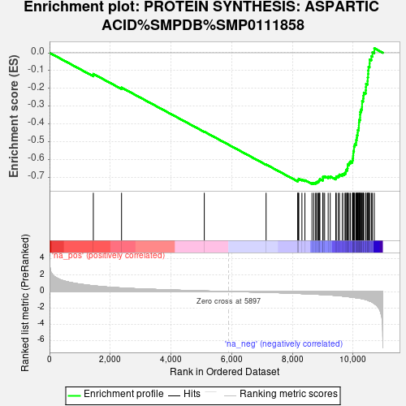
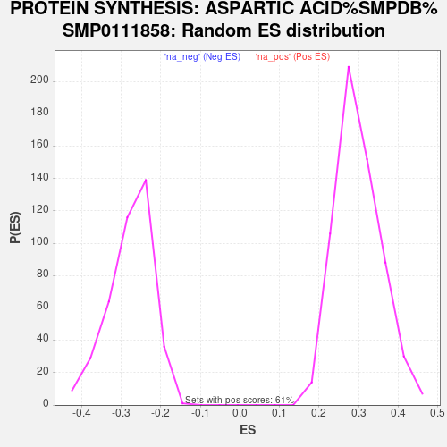

| Dataset | aa_vs_healthy |
| Phenotype | NoPhenotypeAvailable |
| Upregulated in class | na_neg |
| GeneSet | PROTEIN SYNTHESIS: ASPARTIC ACID%SMPDB%SMP0111858 |
| Enrichment Score (ES) | -0.73907155 |
| Normalized Enrichment Score (NES) | -2.678651 |
| Nominal p-value | 0.0 |
| FDR q-value | 0.0 |
| FWER p-Value | 0.0 |

| SYMBOL | RANK IN GENE LIST | RANK METRIC SCORE | RUNNING ES | CORE ENRICHMENT | |
|---|---|---|---|---|---|
| 1 | RPS25 | 1443 | 0.703 | -0.1189 | No |
| 2 | RPL7A | 2373 | 0.436 | -0.1957 | No |
| 3 | RPL36A | 5099 | 0.071 | -0.4443 | No |
| 4 | RPS10 | 7135 | -0.104 | -0.6289 | No |
| 5 | RPS3 | 8179 | -0.231 | -0.7201 | No |
| 6 | RPL8 | 8180 | -0.231 | -0.7157 | No |
| 7 | RPL14 | 8206 | -0.236 | -0.7134 | No |
| 8 | RPL30 | 8210 | -0.237 | -0.7092 | No |
| 9 | RPS16 | 8316 | -0.255 | -0.7139 | No |
| 10 | RPS18 | 8414 | -0.268 | -0.7177 | No |
| 11 | RPL19 | 8648 | -0.307 | -0.7332 | Yes |
| 12 | RPS19 | 8708 | -0.315 | -0.7326 | Yes |
| 13 | RPS15 | 8767 | -0.329 | -0.7316 | Yes |
| 14 | RPL3 | 8796 | -0.336 | -0.7278 | Yes |
| 15 | RPL18 | 8838 | -0.343 | -0.7250 | Yes |
| 16 | RPL35 | 8872 | -0.348 | -0.7213 | Yes |
| 17 | RPL28 | 8890 | -0.353 | -0.7161 | Yes |
| 18 | DARS1 | 8908 | -0.355 | -0.7109 | Yes |
| 19 | RPL23A | 9006 | -0.378 | -0.7126 | Yes |
| 20 | UBA52 | 9008 | -0.378 | -0.7054 | Yes |
| 21 | RPL27A | 9009 | -0.378 | -0.6982 | Yes |
| 22 | RPL36 | 9064 | -0.391 | -0.6956 | Yes |
| 23 | RPL13A | 9181 | -0.413 | -0.6984 | Yes |
| 24 | RPS27 | 9248 | -0.428 | -0.6962 | Yes |
| 25 | RPLP2 | 9431 | -0.481 | -0.7037 | Yes |
| 26 | RPS9 | 9448 | -0.485 | -0.6959 | Yes |
| 27 | RPL26 | 9515 | -0.506 | -0.6923 | Yes |
| 28 | FAU | 9554 | -0.519 | -0.6859 | Yes |
| 29 | RPS7 | 9645 | -0.548 | -0.6836 | Yes |
| 30 | RPL4 | 9709 | -0.580 | -0.6783 | Yes |
| 31 | RPLP1 | 9756 | -0.602 | -0.6710 | Yes |
| 32 | RACK1 | 9768 | -0.607 | -0.6604 | Yes |
| 33 | RPL24 | 9810 | -0.622 | -0.6523 | Yes |
| 34 | RPL13 | 9822 | -0.626 | -0.6413 | Yes |
| 35 | RPL6 | 9823 | -0.627 | -0.6293 | Yes |
| 36 | RPS12 | 9869 | -0.644 | -0.6211 | Yes |
| 37 | RPS28 | 9911 | -0.661 | -0.6122 | Yes |
| 38 | RPS29 | 9979 | -0.694 | -0.6051 | Yes |
| 39 | RPS15A | 9994 | -0.701 | -0.5929 | Yes |
| 40 | RPL37 | 10002 | -0.705 | -0.5801 | Yes |
| 41 | RPL38 | 10007 | -0.707 | -0.5669 | Yes |
| 42 | RPL18A | 10011 | -0.709 | -0.5537 | Yes |
| 43 | RPL37A | 10032 | -0.722 | -0.5417 | Yes |
| 44 | RPS13 | 10034 | -0.722 | -0.5279 | Yes |
| 45 | RPL10A | 10056 | -0.731 | -0.5159 | Yes |
| 46 | RPL41 | 10100 | -0.760 | -0.5053 | Yes |
| 47 | RPL23 | 10103 | -0.761 | -0.4909 | Yes |
| 48 | RPL21 | 10124 | -0.772 | -0.4780 | Yes |
| 49 | RPS20 | 10131 | -0.776 | -0.4637 | Yes |
| 50 | RPS11 | 10153 | -0.791 | -0.4505 | Yes |
| 51 | RPLP0 | 10155 | -0.791 | -0.4354 | Yes |
| 52 | RPS23 | 10187 | -0.805 | -0.4229 | Yes |
| 53 | RPS21 | 10192 | -0.807 | -0.4078 | Yes |
| 54 | RPL10 | 10195 | -0.810 | -0.3925 | Yes |
| 55 | RPS14 | 10203 | -0.815 | -0.3775 | Yes |
| 56 | RPL27 | 10233 | -0.830 | -0.3643 | Yes |
| 57 | RPS4X | 10234 | -0.831 | -0.3484 | Yes |
| 58 | RPS24 | 10238 | -0.833 | -0.3327 | Yes |
| 59 | RPL15 | 10266 | -0.851 | -0.3190 | Yes |
| 60 | RPS6 | 10295 | -0.866 | -0.3049 | Yes |
| 61 | RPL5 | 10298 | -0.869 | -0.2885 | Yes |
| 62 | RPL39 | 10299 | -0.869 | -0.2719 | Yes |
| 63 | RPS26 | 10334 | -0.899 | -0.2578 | Yes |
| 64 | RPSA | 10342 | -0.906 | -0.2411 | Yes |
| 65 | RPL7 | 10355 | -0.921 | -0.2246 | Yes |
| 66 | RPL11 | 10419 | -0.980 | -0.2116 | Yes |
| 67 | RPS8 | 10424 | -0.984 | -0.1932 | Yes |
| 68 | RPL34 | 10429 | -0.996 | -0.1745 | Yes |
| 69 | RPS5 | 10480 | -1.052 | -0.1589 | Yes |
| 70 | RPL31 | 10484 | -1.059 | -0.1389 | Yes |
| 71 | RPS17 | 10496 | -1.068 | -0.1195 | Yes |
| 72 | RPL32 | 10501 | -1.081 | -0.0992 | Yes |
| 73 | RPL22 | 10510 | -1.096 | -0.0790 | Yes |
| 74 | RPL35A | 10546 | -1.159 | -0.0600 | Yes |
| 75 | RPS3A | 10548 | -1.165 | -0.0378 | Yes |
| 76 | RPS2 | 10605 | -1.242 | -0.0192 | Yes |
| 77 | RPL29 | 10639 | -1.318 | 0.0030 | Yes |
| 78 | RPL12 | 10701 | -1.481 | 0.0258 | Yes |
